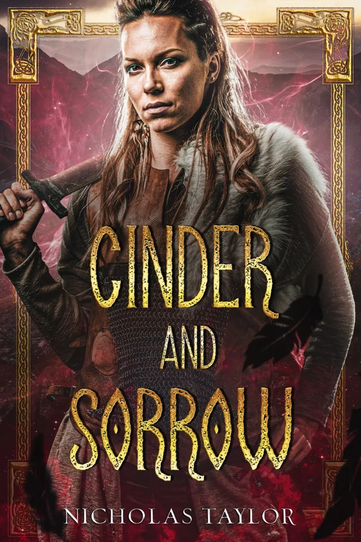

Essaerist War
An empire advances. The old world burns.
Explore the seriesThe fiction of Nicholas Taylor
Magic. Empire. Distant worlds.
Stories about the people caught between them.

The latest release
Essaerist War · Book two
The frontier has burned. Now the war comes for the heartlands. As the lines between duty and defiance blur, what is still worth saving?
Begin the story with
Ash and Ruin
Choose your next chapter
Find a place you’ve never been.
Meet people you won’t forget.
An empire advances. The old world burns.
Explore the seriesA familiar life. An extraordinary awakening.
Explore the seriesMagic is out in the open. So is the danger.
Explore the seriesHumanity reached the stars. War followed.
Explore the seriesMechanical wings. A city full of secrets.
Explore the seriesSome things wake when the city sleeps.
Explore the seriesA story is better shared
Questions about the books, or something you’d like to share?
Get in touch with Nicholas.